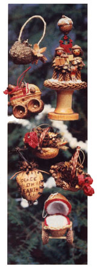

Your Christmas decorating will take on a special significance with these tree trimmings.
Handcrafted Ornaments Nowadays, it seems that advertisements begin proclaiming holiday bargains on gifts and decorations before we have a chance to savor the last bite of Thanksgiving turkey. However, many folks are finding that simply spending more money doesn't assure a merrier Christmas . . . and, in an effort to regain the simplicity that once characterized this special holiday, more and more people are fashioning their own gifts and ornaments.
If you're seeking ideas for handcrafted trim mings to adorn your tree or to give as gifts, you're sure to find inspiration in the work of Virginia Morris, an artist who's lived in Black Mountain, North Carolina, for more than 20 years. Her distinctly original, delicate creations offer welcome alternatives to the profusion of commercial look-alike tree trinkets. And, though the decorations pictured here are quite intricate, Virginia's basic techniques are so straightforward that even amateur crafts people should be able to follow her tips and create attractive ornaments.
NUTTY CREATIONS
Using such ordinary natural objects as walnuts, acorns, seedpods, and dried flowers, Virginia creates intricate ornaments that fairly shout with ingenuity (have you ever seen a walnut-shell hot rod or baby buggy before?). Grapevines, dried flowers, grasses, and nuts serve as ideal trimmings, and with the addition of a scrap of felt or flannel, some rope, a bit of yarn, and a touch of all-purpose glue, the natural finds are transfigured into delicate pieces of artwork. Virginia does advise purchasing the walnuts, though, to ensure that you'll have unblemished shells. Jumbosize nuts work best.
Ms. Morris suggests the same basic technique to make each ornament. To split the shells while keeping the halves intact, find the widest opening along the "seam" of the nut and gently insert a knife in the crack. Then pry the walnut apart and scoop out the innards.
Once the walnut is pried apart and cleaned, you can fashion the halves into practically any design. To make the hot rod, cut one walnut section in half to form the seat and hood of the car. Then cover the seat with glue, line it with felt, and glue the whole shebang into a half-shell auto. The hood is attached next, then the red trim is added. The driver shown here is simply a hemlock cone with an acorn head (on which Virginia painted a face) and cap. Twig arms guide the acorn-cap steering wheel, and the head- and taillights of the vehicle are fashioned from immature acorns. Virginia made the car's wheels by drilling a 1/8" hole in each of four acorn caps, then inserting matchstick axles into the openings. The resulting apparatus was then glued to the base of the chassis. A plastic windshield and a crocheted scarf top off the ornament, though-for custom work-Virginia often adds a personalized license tag.
The baby buggy is crafted in a similar manner, with the same close attention to details. Scraps of red and white brushed flannel furnish a cozy bed for the swaddled acorn twins . . . a characteristic handle-fashioned from a braided strand of rope-is attached to the buggy's front . . . and the axles and wheels are identical to those of the hot rod.
Each of the flower basket decorations pictured here is set in half a walnut shell. A section of polystyrene foam glued in the bottom of each shell forms a base for inserting the dried flowers and gluing the nuts in place . . . and a braided-hemp handle and a ribbon of brightly colored burlap complete the arrangement. Virginia notes that it's important to gather the dried materials before they become brittle and to coat the foraged finds immediately with a craft spray (the type used to prevent charcoal drawings from smudging) to keep them from shredding.
The bird's-nest ornament is fashioned from a large acorn cap. Acorn-and-seedpod fledglings chirp for their dinner from a bed lined with fine, loose strands of rope . . . dried flowers and a grapevine sprig grace the side of the nest . . . and a twisted-hemp handle allows for easy hanging on the tree.
Perhaps none of the decorations so simply set forth the spirit of Christmas as Virginia's "peace on earth" ornament. Ten 1/8" holes drilled along the edges of each walnut half enable two leather strands to be threaded through the ornament and tied at the top. Other than the simple inscription, which was written with a woodburning tool, the only adornments are a pair of leather leaves and a couple of dried seedpods.
The caroler piece can serve as a tree ornament, mantle decoration, or centerpiece. A wooden spool, flanked by two 1-1/2"-diameter circles of scrap wood and by matching felt cushions, forms the base of the ornament. The carolers are fashioned out of hemlock cones with acorn heads and caps, yarn hair, and twig arms that hold leather hymnals (one caroler has a trumpet in hand as well!). At the feet of the singers sits a dog-made from an acorn, twigs, and scraps of hemlock-decked out in a festive yarn collar. Other touches to the familiar scene include a matchstick-and-acorn lamp on which a Christmas wreath hangs, a dried-twig evergreen, and glue-and-tissue-paper snow covering the ground.
CREATE YOUR OWN
The ornaments pictured here are just a sampling of some of the creations you can fashion with natural materials. You'll no doubt come up with many of your own custom-made designs. Although your first few attempts may not be as intricate as those shown here, you'll find that even the simplest handcrafted ornament will bring far more joy to its recipient than could the gift of any glitter-laden storebought trinket. And isn't that, after all, what Christmas is all about?
|
 |
|
|